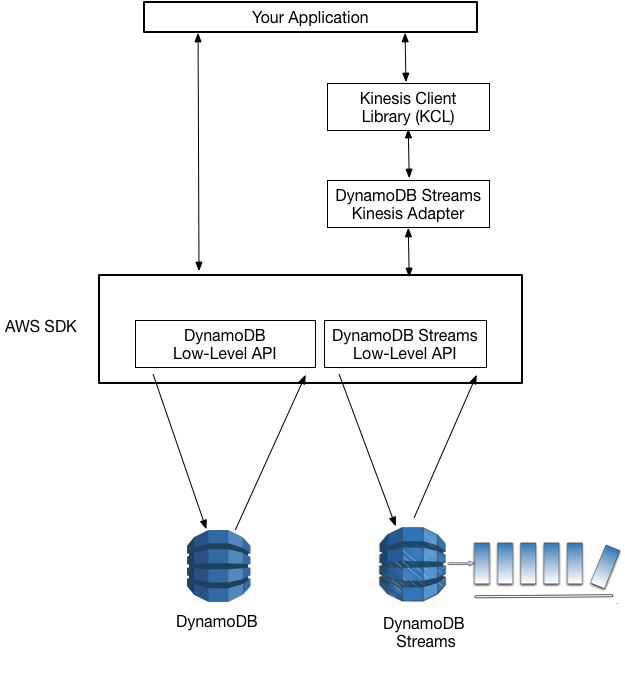

Ref
- AWS SAA: EC2, EBS, S3, EFS, Storage Gateway
-
- 迅速取り出し: 通常 1～5 分
- 標準取り出し: 通常 3～5 時間
- 大容量(バルク)取り出し: 大量データを 5～12 時間。最低価格。
-
S3 Glacier Deep Archive
- 取り出し: 12 時間 or 48 時間の 2 つのオプション
-
最低保持期間 90日。
-
Vault
- アーカイブを格納するコンテナ。
- Vault Lock ポリシーで「write once read many: WORM」などを指定できる。
- Vault アクセスポリシーもある。
-
Glacier Select
- Vault 内のオブジェクトを取り出さずに S3 Select できる。
- バケット名やキー名のリスト、メタデータ更新のための無駄なコピーを避ける。
CloudFront での S3 キャッシュによるコスト削減
- CloudFront - S3 間は転送料がかからない。
- CloudFront は S3 より転送料高いがボリュームディスカウントが大きいので大規模トラッフィクなら安くなるかも。
Storage Gateway
-
オンプレの Storage Gateway から S3 をバックエンドとして利用。
- GW は仮想アプライアンス(VM) かハードウェアアプライアンス。
-
ファイルゲートウェイ
- NFS インターフェース。
-
テープゲートウェイ (VTL: Virtual Tape Library)
- iSCSI VTL インターフェース。
-
ボリュームゲートウェイ
- iSCSI インターフェース。マウント可能。
-
保管型ボリュームゲートウェイ (Stored volumes)
- オンプレ側がプライマリで S3 がバックアップ。
-
キャッシュ型ボリュームゲートウェイ (Cached volumes)
- オンプレ側はキャッシュ。S3 側がプライマリ。
-
暗号化
- デフォルトで SSE-S3 有効。API で SSE-KMS も利用できる。
EFS: Elastic File System
-
EC2 インスタンスから利用する NFS 大規模分散ストレージ。
- 自動で伸縮してペタバイトまで拡張可能。
-
並列ワークロードのサポート
- 何千ものインスタンスから同時にマウントできる。
- VPC にマウントターゲットを作成し EC2 から NFS マウント。
- マルチ AZ 可能。
-
ファイルシステムのアクセスセマンティクス (強い整合性やファイルのロックなど) を提供
Amazon Data Lifecycle Manager (DLM)
- EBS ボリュームのスナップショット作成、保持、削除を自動化。
- RDS のスナップショットには使えない。
スケーリング
- RDB の増強は垂直スケーリング(=スケールアップ) が必要。
- NoSQL は水平スケーリング(=スケールアウト) が可能。
Amazon RDS
-
可用性 → マルチAZ
- マスター/スタンバイ構成
- デフォルトでマルチ AZ 配置となる
-
負荷分散 → リードレプリカ
Amazon RDS Proxy
- Lambda が DB コネクションを大量に作成することで過負荷になるのを防ぐのに使う。
- https://aws.amazon.com/jp/blogs/news/using-amazon-rds-proxy-with-aws-lambda/
Amazon Aurora
-
MySQL/PostgreSQL 互換。
- MySQL の 5倍、PostgreSQL の 3倍のスループット。
-
Amazon RDS を使ったフルマネージドサービス。
-
クラスターボリューム
- 自動的に 3つの AZ に 6 つのコピーが作成される
- シームレスにスケール (10GB 〜 64TB) する仮想ストレージ
-
DB クラスター
-
プライマリ DB インスタンスと Aurora レプリカ (リードレプリカ)
- レプリカは15 個まで作れる。
-
マルチ AZ: DB クラスター作成時にマルチ AZ 指定する。
- クラスタボリュームはデフォでマルチ AZ だが、DB クラスターではオプション。
-

Aurora Global Database
- 別リージョンにリードレプリカを配置してレプリケート。ローカル読み取りの高速化。
- 1つのプライマリリージョン (マスター)と最大 5つのセカンダリリージョン (読み取り専用) で構成。
- https://docs.aws.amazon.com/ja_jp/AmazonRDS/latest/AuroraUserGuide/aurora-global-database.html
Aurora Serverless (serverless DB エンジンモード)
- DB クラスターのオンデマンド Auto Scaling。
- DB インスタンスのサイズを指定する代わりに最大/最小キャパシティーを指定してデータベースエンドポイントを作成する。
- 使用状況に応じて DB インスタンスのフリートが自動的にスケールされる。
- データベースエンドポイントの接続先のルーターフリートが、DB インスタンスのフリートにワークロードを送信。
- https://docs.aws.amazon.com/ja_jp/AmazonRDS/latest/AuroraUserGuide/aurora-serverless.how-it-works.html
従来の Aurora (provisioned DB エンジンモード)
- DB インスタンスのサイズ変更または Aurora レプリカでスループットを増やす。
エンドポイント

-
クラスターエンドポイント
- プライマリ DB インスタンスに接続するエンドポイント。
- 障害時は透過的に Aurora レプリカにフェイルオーバー。
-
読み込みエンドポイント
- Aurora レプリカにロードバランシング接続。
-
インスタンスエンドポイント
- 特定インスタンスへのエンドポイント
-
カスタムエンドポイント
- インスタンスの組み合わせを自由に行えるエンドポイント
スナップショットのコピー
- クロスアカウント・クロスリージョンでスナップショットのコピーが可能。
- KMS 暗号化されたスナップショットをコピーする際、コピー先に別の CMK も使用できる。
- クロスアカウント (同一リージョン) ではアカウントは CMK へのアクセス権限が必要。
- クロスリージョンでは移動先リージョンの CMK を使用する必要がある (KMS はリージョン固有)。
Amazon Redshift
- 数百ギガバイト〜ペタバイト超のデータセットに対して高いクエリパフォーマンスを発揮
- クエリ実行に必要な I/O 量の抑制: 列指向ストレージとデータ圧縮
-
超並列処理 (MPP: Massive Parallel Processing) アーキテクチャ
-
クラスタ構成
- リーダーノード/コンピュートノード
- ノード間は 10GB のネットワークで接続
- ダウンタイムなしでスケールアップ/ダウン
-
シェアードナッシング
- ディスクをノードで共有しない。１つの表は各ノードごとのストレージに分散して保存。
-
スライス
- コンピュートノード内でメモリ・CPU・ディスクスがスライス(分割)され、データも分割格納される
-
Redshift Spectrum
- S3 のエクサバイト規模のデータをロードせずに外部テーブルとして直接クエリできる。
- コンピュートノードの先の Spectrum 層経由で S3 に透過的にアクセス。
Redshift Spectrum と Athena の違い
-
Athena
- クラスタを立ち上げずにすぐ使える。ファイルに対する grep の UI 的な位置付け。
-
Redshift Spectrum
- テーブルの追加手段な位置付け。クラスタで動作するため大規模データに対して高速レスポンス
-
Redshift はデータウェアハウス、Athena はデータレイク。
- データウェアハウスは構造化データの高速クエリ。
- データレイクは構造化・非構造化データを分析。分析時にスキーマをあてる(スキーマオンリード)。
Amazon Neptune
- フルマネージド型のグラフデータベースサービス。
-
グラフ構造でデータを保存
- ノード: データエンティティ
- エッジ: リレーションシップ
- プロパティ
-
データのリレーションシップを操作するクエリのパフォーマンスが高い。SNS のソーシャルグラフ等の実装。
- 一般的に使われるオープングラフ API をサポート。
DynamoDB
Ref.
- API Reference
- https://d1.awsstatic.com/webinars/jp/pdf/services/20170809_AWS-BlackBelt-DynamoDB.pdf
- https://d1.awsstatic.com/webinars/jp/pdf/services/20181225_AWS-BlackBelt_DynamoDB.pdf
概要
- Key-Value ストアのドキュメントデータベース (NoSQL)
- データの格納・取得に特化。RDB の関係演算 (結合・射影等) が必要な用途には向かない。
-
パーティションプライマリキー: パーティションキー(ハッシュ属性) のみ
- テーブル内でユニークでなければならない。
-
複合プライマリキー: パーティションキー & ソートキー(範囲属性)
- 同じパーティションキーに対して一意のソートキー。
- ソートキーにより項目をパーティション内でソートできる。
- パーティションキーの値が同じ項目は同じパーティションに保存される。
-
項目のデータ (ドキュメント) は JSON
- 属性値としてリストやマップもある。
- 項目のサイズは最大 400KB (属性名含む)。
-
テーブルに容量 (項目数) の制限はない。
- IAM でテーブルや属性レベルの柔軟なアクセスコントロールができる。
Ref. https://aws.amazon.com/jp/blogs/database/choosing-the-right-dynamodb-partition-key/
-
強い整合性: ConsistentRead
- 読み込み系の API で ConsistentRead パラメータに True を設定。
-
DynamoDB トランザクション
- TransactGetItems/TransactWriteItems により複数項目・テーブルを同時に読み込み/書き込み
読み込み/書き込みスループット指定
- プロビジョンド型キャパシティモード
- オンデマンド型キャパシティーモード
プロビジョンド型キャパシティモード
- テーブルに 1秒あたりの RCU/WCU を設定する。
-
RCU: 4KB単位
- 結果整合性 2回
- 強い整合性 1回
-
WCU: 1KB単位
- 実際の読み書きの有無に関わらず、設定したキャパシティにより課金が発生。
- AWS Auto Scaling でスケーリングできる (下図参照)
- スループットを超えるとスロットリングが発生: ProvisionedThroghputExceeded 例外。
- スループットはパーティション間で均等に分割される。パーティションごとのスループットは設定した総スループットをパーティション数で割った値。
オンデマンド型キャパシティーモード
-
キャパシティを設定せず、発生したリクエストによる従量課金。
- オンデマンドの方が料金が高い。オンデマンドでも強い整合性のほうが高い。
-
トラッフィックが新しいピークに達すると瞬時にスケールアップ。
- 初期値: 6,000 RCU / 2,000 WCU
- 30分以内に前のピークの 2倍を超えた場合にはスロットリングが発生する。
セカンダリインデックス
- プライマリキー以外の属性(代替キー)でクエリしたい場合に作る検索用テーブル。
- 作成時にはベーステーブルからインデックスにコピー (射影: Projection) する属性も指定する。
- ProjectionType: KEYS_ONLY, INCLUDE (キーと NonKeyAttributes に指定した属性), ALL
- クエリ結果では射影した属性のみが取得できる。
ローカルセカンダリインデックス (LSI)
-
追加のソートキーに対してパーティション内に作成されるインデックス。
- 複合プライマリキーの場合に別のソートキーを追加する。
-
テーブル作成時のみ作成でき、削除できない。
- RCU/WCU はテーブルと共有。結果整合性と強い整合性をサポート。
- 最大5個まで。
- 項目コレクション(同じパーティションキーの全項目と LSI の項目) は同じパーティションに保存され、合計サイズが 10 GB を超えてはならない。
- 射影されていない属性もクエリの KeyConditionExpression に指定できる。
- プライマリキー属性も射影しているため、ベーステーブルの項目を参照して属性値を利用できる。
グローバルセカンダリインデックス: GSI
- 異なるプライマリキーで検索するインデックス。
- 異なるプライマリキーで作った別テーブルにレプリケーションする仕組み。
- RCU/WCU も個別に設定される。
- テーブルあたり 20 個まで (上限緩和可能)。
- 結果整合性のみサポート。GSI は異なるキャパシティを設定した結果整合性のリードレプリカとも考えられる。
- テーブル作成と同時に作成することも、後から作成・削除することも可能。
- GSI の WCU がベーステーブルより低いとレプリケーション時の書き込みエラーによりベーステーブルの書き込みでスロットリングが発生するらしい。
問題例
- The table has an attribute of DocumentName that acts as the partition key and another attribute called Category as its sort key.
- A DevOps Engineer was instructed to develop a feature that queries the DocumentName attribute yet uses a different sort key other than the existing one.
- To fetch the latest data, strong read consistency must be used in the database tier.
解答
- Set up a new DynamoDB table with a Local Secondary Index that uses the DocumentName attribute with a different sort key. Migrate the data from the existing table to the new table.
誤答
- Add a Global Secondary Index that uses the DocumentName attribute and a different sort key
- is incorrect. Although it is possible to query data without using a scan command, it is still not enough because GSI does not support strong read consistency which is required in the scenario.
DynamoDB ストリーム
- テーブルに行われた過去 24 時間の追加・更新・削除の履歴を保持したストリーム。
-
操作が行われた順番でデータはシリアライズされ、特定パーティションキーへの変更は順序通りに取得可能。
- 1秒未満のレイテンシーでストリームに反映される。(Near Real Time)
- スループットは WCU の２倍。WCU の２倍のスループットなのでスループットの問題はない。
-
テーブル作成時に有効化することも、後から有効化することも可能。
-
KCL (Kinesis Client Library) を利用してアプリを開発できる。
- KCL を利用することでシャード意識した低レベル API を抽象化してコードを書ける。
- KCL に DynamoDB Streams Kinesis Adapter を噛ませることで、DynamoDB ストリームに対して KCL を使用できる。
- 
- https://docs.aws.amazon.com/ja_jp/amazondynamodb/latest/developerguide/Streams.KCLAdapter.html
-
Lambda のイベントソースマッピングのイベントソースにできる (ストリーム型)
- DynamoDB ストリームの1つのシャードに 3つ以上のリーダーが同時に読み取るとスロットリングが発生する。3つ以上の Lambda を連携させる場合は1つの Lambda から SNS で分岐する。
- 他に統合された AWS サービスはない模様。DynamoDB のドキュメントで Lambda トリガーと言っているがこれもイベントソースマッピングのこと。
- Ref.
- https://docs.aws.amazon.com/ja_jp/lambda/latest/dg/with-ddb-example.html
- https://docs.aws.amazon.com/ja_jp/amazondynamodb/latest/developerguide/Streams.Lambda.Tutorial.html
- 内部では Kinesis 使われてるので３つ以上のクライアント作ると同じシャードを読みに行ってスロットリング起こる。1つの Lambda で読んで SNS に投入する。
グローバルテーブル
- DynamoDB ストリームを利用したマルチリージョン・マルチマスターのレプリケーション。
-
レプリカテーブル
- リージョン毎にレプリケーションを受けるレプリカテーブルを作成する必要がある。
- 同一アカウントのみ。
-
近いリージョンのレプリカにアクセスすることでレイテンシー削減。ディザスタリカバリにも。
- 最新書き込み優先: 同じ項目が複数リージョンで同時に変更された場合、可能な限り最新の変更が優先される。
- 整合性
- 強い整合性の読み込みは単一レプリカ内でのみ有効。他リージョンでの変更には保証されない。
- トランザクションも同様に単一レプリカ内でしか機能しない。
バックアップ
-
オンデマンドバックアップ
- テーブル全体のスナップショットを作成してアーカイブ。
-
ポイントインタイムリカバリー
- 直前 35日間の任意の時点にダウンタイムなしに復元可能。増分バックアップ。
- ポイントインタイムリカバリーの「有効化」で有効にする。(デフォルト無効)
オブジェクト永続性モデル
- Java SDK と .NET SDK でサポートされている O/R マッピング的な高レベル API。
- テーブルをクラス、項目をインスタンスとして扱える。
CreateTable オペレーション
-
テーブル作成後に変更できない属性
- テーブル名
- パーティションキー/ソートキー
- ローカルセカンダリインデックス
-
オプション
- GSI/ストリームは後からでも設定可能。
-
table.meta.client.get_waiter(’table_exist')
- 指定したステータスまで待たせる。
- KeySchema: キー属性名を指定した配列、キーの種類を HASH または RANGE で指定。
- AttributeDefinitions: キー属性のデータ種類を指定した配列。
- ProvisionedThroughput: RCU/WCU の設定。後から UpdateTable で変更できる。
-
GlobalSecondaryIndexes, LocalSecondaryIndexes:
- それぞれ IndexName, KeySchema, Projection を指定。
-
SSESpecification:
- 設定しなくてもデフォで AWS owned CMK で KMS 暗号化される。
-
StreamSpecification:
- StreamEnabled: true/false
- StreamViewType:
- KEYS_ONLY: 変更された項目のキー属性のみ
- NEW_IMAGE: 変更後の項目全体
- OLD_IMAGE: 変更前の項目全体
- NEW_AND_OLD_IMAGES: 変更後と変更前の項目全体
PutItem オペレーション
- キーに対して項目の新規作成または上書きを行う。
- フールプルーフのため、更新時には使わずに UpdateItem 使うようにする。
ConditionExpression パラメータ
- PutItem, UpdateItem, DeleteItem のパラメータ。処理が実行される条件を指定する条件式。
- https://docs.aws.amazon.com/ja_jp/amazondynamodb/latest/developerguide/Expressions.ConditionExpressions.html
ReturnValues パラメータ
- PutItem, UpdateItem, DeleteItem のパラメータ。返り値として取得する属性の指定。
- NONE, ALL_OLD, ALL_NEW, UPDATED_OLD, UPDATED_NEW。
UpdateItem オペレーション
-
UpdateExpression パラメータ: 更新式
- SET, REMOVE, ADD, DELETE で属性を指定して更新。
-
項目がなければ新規作成になる。
-
ExpressionAttributeNames/ExpressionAttributeValues:
- 更新式で使う属性名・属性値のプレースホルダー
-
- ExpressionAttributeNames: 1文字目は < # >。２文字目は英字。以降は英数字。
- ExpressionAttributeValues: 1文字目は < : >。２文字目は英字。以降は英数字。
GetItem オペレーション
- Key: キーを表す属性名と値のペアのマップ。
-
ProjectionExpression: 取得する属性をカンマで区切りで指定。
- 指定しない場合は全属性が返される。
- ちなみにこれで転送データ量を下げても RCU は減らないとのこと。
-
ConsistentRead: true/false
Query オペレーション
- テーブル/インデックスからキーを指定してデータを取得する。
- KeyConditionExpression: 取得する項目のキーを指定する条件式。(KeyConditions はレガシーパラメータ)
- ProjectionExpression: 取得する属性をカンマで区切りで指定。指定しない場合は全属性が返される。
- FilterExpression: クエリでローカルに取得されたデータをキー属性以外でさらにフィルタする条件式。
- テーブル側でキーで検索し、ローカル側 (オンメモリ) で属性でフィルタする。
Scan オペレーション
- テーブル/インデックスの全項目を取得して FilterExpression でローカルでフィルタ。非効率。
- インデックスのない属性の特定の値の項目を取得するにはこの方法が必要になる。
LastEvaluatedKey: Query/Scan のページネーション
- 1MB 単位のページ分割または Limit パラメータの値によってページネーションが発生する。
- ページネーション発生時に LastEvaluatedKey 値が Non-NULL で返される。
- 次回リクエストの ExclusiveStartKey パラメータに値を指定して後続アイテムを取得。
バッチオペレーション
- 複数テーブルの複数項目の読み込み・書き込み処理のバッチ実行。
- スループット向上。個々にコールすると RCU/WCU 使って無駄。
- スレッド作らなくても並列処理してくれる。
-
UnprocessedItems
- スループット超過等でエラーになったリクエストは UnprocessedItems で返るのでループで再処理。
- １つも処理できなかった場合は ProvisionedThroughputExceededException となる。
-
table.batch_writer()
DynamoDB トランザクション
- 複数テーブルにまたがる複数項目の読み込み/書き込み処理で ACID 特性 (原子性・一貫性・分離性・耐久性) を提供。
- 1つのオペレーション失敗すると全体が失敗する。整合性保ちたい場合はバッチではなくこちらを使う。
-
トランザクション用に項目毎に 1 RCU/1 WCU が追加で必要となる。
- TransactionInProgressException 例外時の SDK の挙動は再試行なのでその分も RCU/WCU 割り当てが必要。
-
Ref.
- https://docs.aws.amazon.com/ja_jp/amazondynamodb/latest/developerguide/transaction-apis.html
- https://dev.classmethod.jp/articles/new-release-dynamodb-transactions/
- https://qiita.com/silverbox/items/18036bb08f16618c21f5
# ベストプラクティス
ホットパーティションを作らない

- プロビジョニングされたキャパシティはパーティションに均等に割り当てられる。
- 集中的にアクセスされるホットパーティションでスロットルが発生するおそれがある。
-
ホットパーティションを作らないようカーディナリティが高いパーティションキーを設計する。
- 例: ランダム値やキーの各文字の ASCII 値を合計した値などをキーに連結する。
-
(RCU を割り当てられるので最近はそんな気にしなくていいらしい)
ホットテーブルとコールドテーブル
- 可能ならテーブル分けてキャパシティによるコストを削減。
- コールドデータならオンデマンド型キャパシティモードのほうが安くなるかも
- 過去テーブルは削除して S3 Glacier に保存することも検討。(Data Pipeline で容易)
テーブルの分割
- 1つの項目に属性多く入れず処理に応じたテーブルの分割を検討する。
- アクセス頻度の高い属性を別テーブルにすることでキャパシティを適切に割り当てる。
- 配列値を持つ属性を別テーブルにするなど、RDB の正規化相当の設計を検討する。
- テーブルを分けることでセキュリティレベルも分けられる。
スパースなインデックス
- LSI/GSI ともにインデックスのキーとなる属性は全項目に存在しなくても構わない。
- インデックスキーの属性を持たない項目はインデックスされず、インデックスのサイズを小さく保てる。
オプティミスティックロック
- 読み込み-変更-書き込み設計パターン/オプティミスティック実行制御。
- 読み込み後の書き込みの間に値が変更されていたら更新を失敗させる擬似ロックのテクニック。
- ConditionExpression 使って versionNum が GetItem 以降に更新されていたらエラーとなる。

アトミックカウンター
- UpdateItem による (厳密にはアトミックじゃない) アトミックカウンタの実現。
- 例: --update-expression "SET Price = Price + :incr"
- 現在の Price 値にかかわらず無条件に増分。ただしエラー時に再試行するのでアトミックじゃない。。。
- https://docs.aws.amazon.com/ja_jp/amazondynamodb/latest/developerguide/WorkingWithItems.html#WorkingWithItems.AtomicCounters
トラブルシューティング
- DynamoDB 操作は全て API なので CloudTrail で全てトラッキングされる。
- CloudWatch アラームを設定してモニタリング。
- 大量アクセスがあるとスロットリング発生してロストが発生する
- RCU/WCU 超えたときは ProvisonedTroughputExceededExpression
- 再試行=エクスポネンシャルバックオフ
AWS Auto Scaling
- CloudWatch メトリクスでキャパシティの 80% 等を目標にターゲットスケーリングできる。
- Auto Scaling によるキャパシティ増加は内部的に UpdateTable が走る。そんな早くない。
- https://docs.aws.amazon.com/ja_jp/amazondynamodb/latest/developerguide/AutoScaling.html
- https://docs.aws.amazon.com/ja_jp/amazondynamodb/latest/developerguide/AutoScaling.CLI.html
DAX: DynamoDB Accelerator
- VPC 内の DynamoDB のインメモリキャッシュ。
- EC2, Beanstalk, ECS 等からの read アクセスのスループット向上。
- マイクロミリ秒のレイテンシ。通常の数ミリ秒のレイテンシが問題となる場合。
- DynamoDB API 互換。コード改修少なく移行。
TTL 機能
- テーブル内の項目を自動削除する TTL を設定できる。
- TTL を指定する属性名をテーブルに設定して、項目にその属性を含める。
- Ref. https://dev.classmethod.jp/articles/try-dynamodb-ttl/
問題例: 60日を過ぎたデータをアーカイブするには
- テーブルで TTL を有効にする。60 日後のタイムスタンプを保持する属性を TTL 属性にする。
- テーブルの DynamoDB Streams を有効にし、Lambda 関数でレコードを Kinesis Data Firehose 配信ストリームに配信する。
- Kinesis Data Firehose 配信ストリームを作成して S3 バケットにデータをロードする。バケットにライフサイクルポリシーを設定しゼロ (0) 日後にデータを S3 Glacier Deep Archive にアーカイブする。
Usecases
ElastiCache
概要
- Key-Value ストアのインメモリキャッシュ。
- セッション情報や一時データのキャッシュなど。
- AZ サービス。
Memcached vs. Redis
Memcached
- マルチスレッド: データアクセスをマルチスレッド処理して複数コアを活用できる。
- 単一 AZ で可用性がなく永続性がないのでロストしてよいデータだけを扱う純粋なキャッシュ。
Redis
- 永続性があるためプライマリデータストアとしても利用できる。
-
データ型
- String に加えて List, Set, Sorted Set, Hash, Bit Array, HyperLogLog をサポート
-
レプリケーション (RDS 同様)
- 最大 5個のリードレプリカ (セカンダリクラスター) に非同期レプリケーション
- 自動フェールオーバー、マルチ AZ。
-
スナップショット
-
暗号化
- 転送時と保管時の暗号化
-
Pub/Sub
- シングルスレッド
-
クラスターモード
- シャードクラスターによる負荷分散。
- シャードごとにプライマリとリードレプリカがある。
- 最大 90 ノードまで対応。
- クライアントは Redis クラスタモード対応のライブラリを使用。
-
Redis AUTH
- パスワード認証。
レプリケーショングループ
- Redis クラスターの集合。
-
プライマリクラスター
- RW の 1 個のクラスター。
- プライマリエンドポイント。
-
リードレプリカ
- RO のセカンダリクラスター。最大 5 個。
- 読み取りエンドポイント。
セキュリティ
- AZ サービスのため、セキュリティグループでコントロールできる。
キャッシュ戦略
- キャッシュヒット/ミス、TTL。
- Ref. https://docs.aws.amazon.com/ja_jp/AmazonElastiCache/latest/mem-ug/Strategies.html
遅延読み込み: Lazy Loading
- キャッシュミス(含 TTL 超過) ならマスターから取得。
- マスターから取得したレコードをキャッシュに書き込み。
- 利点: キャッシュのサイズが小さい
- 欠点: 古いデータの参照
書き込みスルー: Write Through
- マスターへの書き込み時にキャッシュも更新するので最新データが返る。
- 欠落データ: 新しいノードはそれまでのデータを持たない。
- キャッシュの変動: 特定データが繰り返し更新される場合にキャッシュが頻繁に更新される
- 書き込みスルーで TTL を有効にすることで、キャッシュのデータが常に最新であることを保証するとともに、未使用データを自動的に削除してクラスターの無駄なスペースを最小限に抑えることができる。
---
可用性
-
HA: 高可用性
- サービス提供が出来なくなる事態の発生頻度が少ないこと
-
冗長化: Redundancy
- プライマリ、セカンダリのマルチ AZ 構成
- フェイルオーバー
- フォールトトレラント(障害許容)設計
-
可用性=稼働率
- 信頼性 (Reliability) は MTBF
- 信頼性が低いサブシステムでも冗長化によりシステム全体の可用性を高められる。
- https://xtech.nikkei.com/it/atcl/column/17/011900625/011900007/
負荷分散
- パフォーマンス
-
ロードバランサー & スケールアウト
- サーバの負荷分散
-
リードレプリカ
- DB の負荷分散
-
キャッシュ
耐久性
- データを失わないことを保証すること。
- バックアップ・ストレージの冗長化。
CAP 定理
- 情報システムにおいて、「以下の3要素を同時に満たすことができない」というもの。
-
Consistency: 一貫性
- 誰かがデータを更新したら、その後は必ず更新後のデータが参照できること
-
Availability: 可用性
- クライアントは必ずデータにアクセス可能であること
- データが壊れたり、ロック待ちにならないこと
-
Partition Tolerance: ネットワーク分断耐性
- データを複数サーバに分散して保管できること
- 1つサーバに障害が発生しデータが破損した場合でも、別サーバによりデータが参照可能であること
- https://www.atmarkit.co.jp/ait/articles/1703/01/news204_2.html
BASE 特性
- クラウドサービスではネットワーク分断耐性が必須。
- サービスである以上可用性を完全に捨てるわけにはいかない。
- 可用性の一部と一貫性の多くを妥協した形で成立させた、クラウドサービス向きのトランザクション特性モデルをBASE特性と呼ぶ。
- 関係データベースのトランザクション特性がACID（酸）であるのに対して、BASE（塩基）